On a “fret” train
Come uccidere un manico con una pressa per tasti e la sua resurrezione.

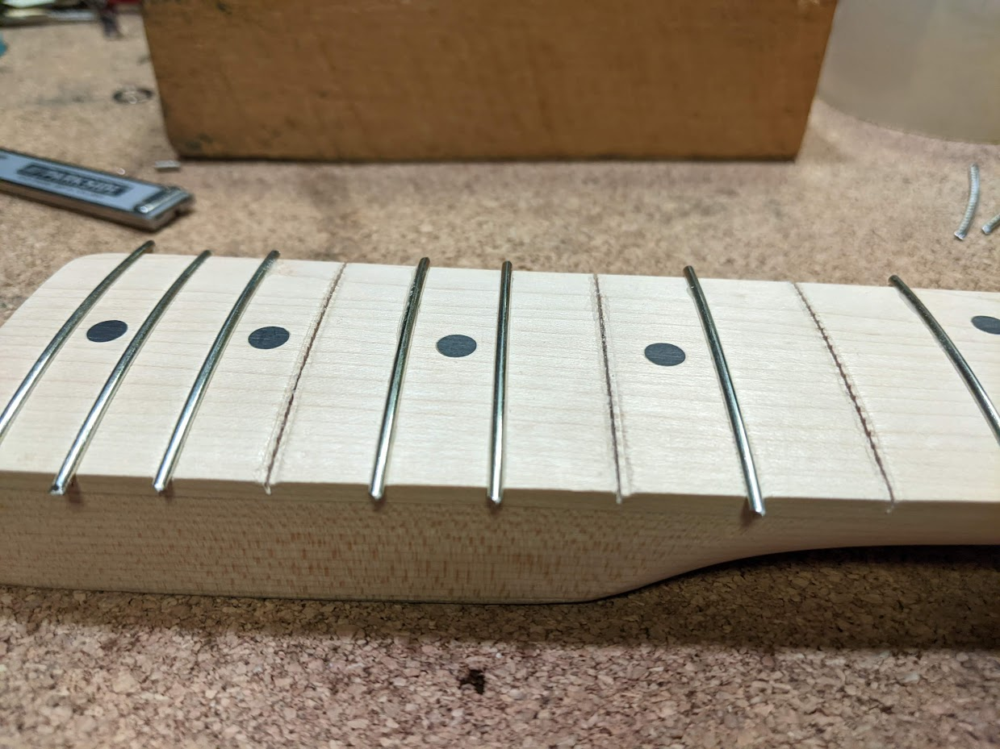
Le lavorazioni che verranno descritte in questo capitolo rappresentano una miscellanea di operazioni, elencate nell’ordine con il quale sono state eseguite. Racconto anche degli errori commessi e come sono avvenuti, nella speranza che non accadano più.
Raggiatura della tastiera
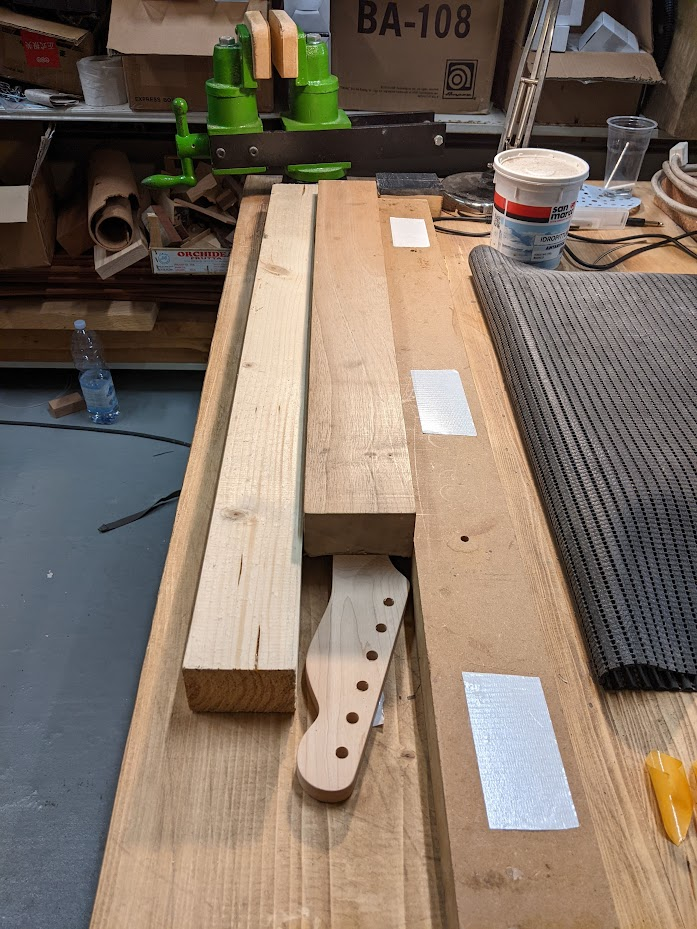
L’operazione di raggiatura della tastiera è apparentemente un’operazione semplice, ma come in tutte le lavorazioni, si nascondono insidie che è bene tenere a mente. Ho scelto una curvatura piuttosto pronunciata, che significa adottare un raggio piccolo, pari a 7.25”. È un raggio vintage, ormai in disuso, ma ero curioso di capire quale è il feeling sotto le dita di un raggio così pronunciato. Bisogna considerare che più il raggio è elevato, più la tastiera è ritenuta “veloce”, nel senso che è possibile fare assoli a velocità sostenuta. Al contrario il bending nei manici curvi dovrebbe essere più piacevole, senza quella sensazione di accavallamento delle corde.
Si procede incollando con del nastro biadesivo su una superficie planare il manico. Si sistemano due quadrotti di legno che faranno da guida in modo che l’asse del manico sia coincidente con l’asse di simmetria. I due pezzi di legno devono avere almeno una delle facce ciascuno piallata e perfettamente planare. Per craere il raggio si utilizza un blocchetto di legno concavo raggiato con lo stesso raggio finale della tastiera a cui è applicata della carta abrasiva a grana grossa (80/120). Il blocchetto scorrerà sulla tastiera e in appoggio sui lati dei quadrotti guida. Per sistemare i quadrotti si prendono le dimensioni del blocchetto abrasivo in modo che scorra parallelo all’asse di simmetria del manico. L’asse di simmetria del blocchetto deve coincidere con l’asse di simmetria del manico.
Una volta sistemati i quadrotti guida si procede alla lavorazione facendo passate lineari in avanti e indietro stando attendi a non esercitare troppa pressione su un punto in particolare. La pressione deve essere esercitata il più uniformemente possibile. Il materiale verrà asportato progressivamente dal contorno esterno verso l’interno. La lavorazione sarà conclusa quando il blocchetto asporta materiale su tutta la tastiera.
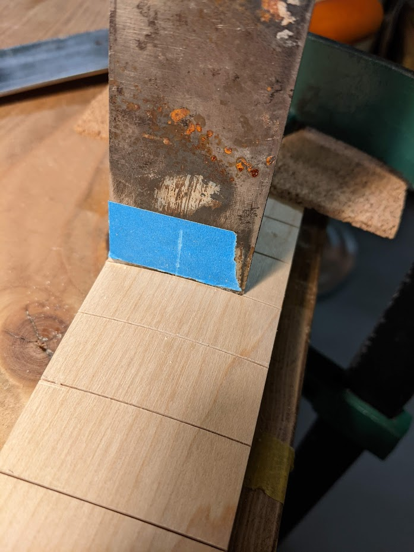
Per procedere all’inserimento dei tasti è necessario che i canali dove alloggeranno devono essere alla giusta profondità, ovvero circa 2 mm. Bisogna quindi ripassare tutti i canali con la sega in modo raggiungere la profondità seguendo il raggio appena creato. Controllare quindi con una dima la corretta profondità (in questo caso si tratta di un pezzo di nastro applicato a 2 mm dal bordo di una rasiera).
Dots
Per i segntasti (o anche “dot”) bisogna tracciare per bene i punti di foratura. Prima di tutto bisogna tracciare nuovamente l’asse di simmetria. Per individuare il punto è sufficiente tracciare la diagonale da un angolo all’altro del tasto, ma si può tracciare anche la seconda per controllo. Nei tasti alti la tracciatura delle diagonali è piuttosto complicata a causa della curvatura e della distanza piccola tra un tasto e l’altro. In questi casi si procede semplicemente prendendo la metà della distanza tra i tasti con un calibro. Questa operazione è molto semplice, ma è da tenere a mente che la precisione della tracciatura deve essere dell’ordine del decimo di mm, altrimenti già con 1 mm di errore si noterà il tasto leggermente spostato.
Per i dot laterali piccoli si procede in modo analogo. Si traccia una linea di riferimento a metà tra il profilo della tastiera e la linea di incollaggio tra tastiera e manico. In alternativa, si può usare anche la linea di incollaggio come linea di riferimento per l’allineamento dei dot.
Prima della foratura è bene praticare un invito al foro con un bulino, o un chiodo. Il foro deve avere il diametro adeguato per il dot scelto e non deve essere né troppo stretto né troppo largo. La profondità di foratura è circa 2 mm, anche se non è necessario essere estremamente precisi perché la parte eccedente verrà carteggiata. Nel caso dei dot laterali quando si pratica il foro fare attenzione a avere un buon ancoraggio all’avvio perché la punta può scappare. Come lo so? Perché mi è scappata! Ed un foro è stato rifatto perché era completamente disallineato. Ovviamente l’errore è visibile, ma sarà lì a ricordarmi ogni volta che lo guarderò quanto sia importante la calma, la precisione e la cura dei dettagli; ma anche a ricordarmi che non fa niente se si sbaglia, perché nella maggior parte dei casi si può rimediare.
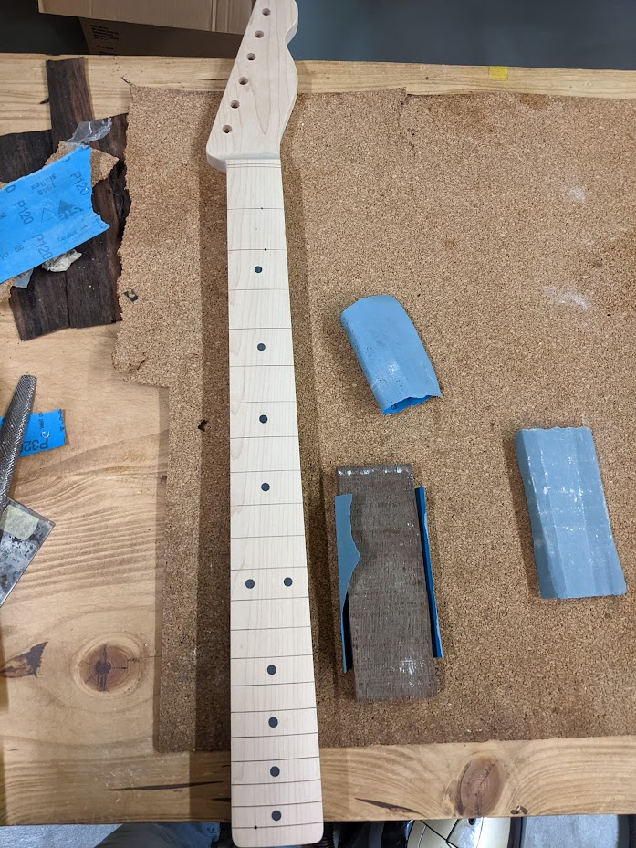
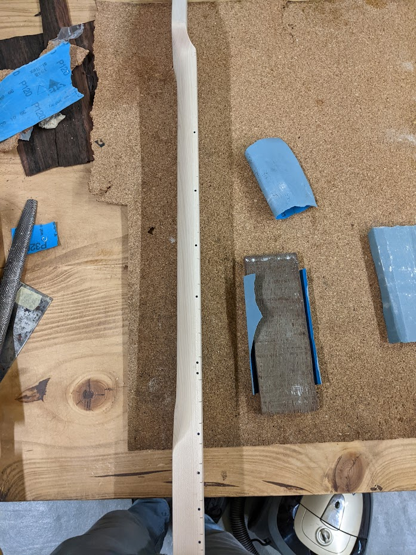
Tastatura
Questa fase è stata piuttosto traumatica perché è facile fare errori abbastanza gravi. In questo caso è stata usata una pressa idraulica autocostruita dal maestro liutaio. Non è difficile usare la macchina, ma è necessario avere la mano in grado di capire la pressione giusta da applicare, senza contare il fatto che la testa della pressa che spinge sul tasto deve essere ben allineata al canale in modo che il tasto entri senza scheggiare il legno.
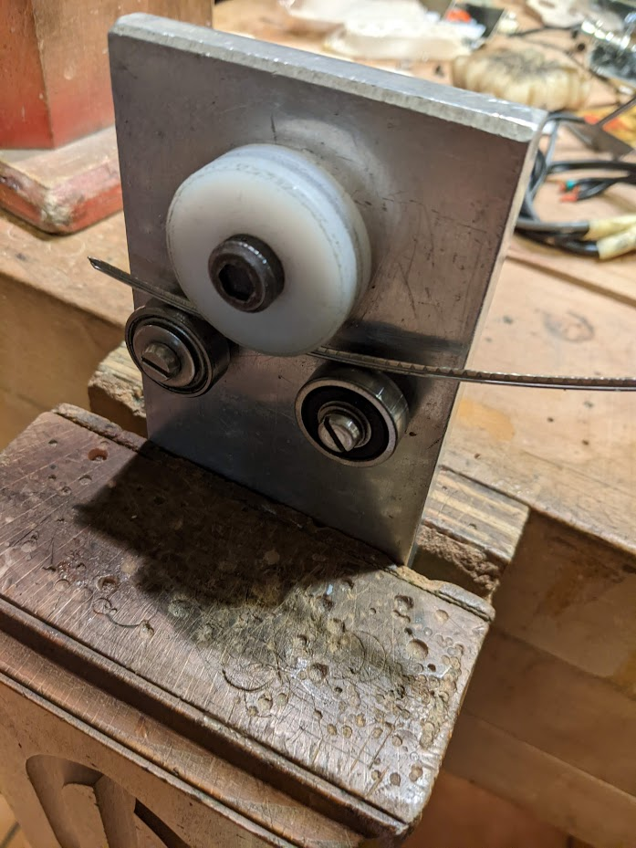
La prima operazione di fare, una volta scelta la grandezza dei tasti (piccoli, medi, jumbo), è piegare il rotolo del tasto a circa il raggio finale della tastiera. La piegatura è fatta con una dima autocostruita formata da una placchetta di allumimio piuttosto spesso (7-10 mm) a cui sono avvitati due cuscinetti a sfera e una rondella in nylon alla quale è stato fatto un intaglio a “v” lungo tutto il perimetro. La rondella di nylon serve e fare presa sulla parte bassa del tasto mentre i due cuscinetti a sfera servono per conferire il raggio e far scorrere il tasto nella piegatura. La piegatura finale deve essere tale che il raggio del tasto piegato sia leggermente minore del raggio della tastiera. Per la verifica si appoggia il tasto piegato sulla tastiera e si vede se passa un leggero filo di luce sotto il tasto nella parte centrale.
La seconda operazione da fare è stata quella di tagliare i tasti a misura, e posizionarli in un contenitore fatto da un blocco di legno con 24 fori. Si parte dal tacco e si prende la misura direttamente con il tasto lasciando circa un paio di mm in più per lato. Il taglio è da farsi con una tenaglia per carpenteria. I tasti tagliati si sistemano uno ad uno in sequenza nei fori del blocchetto. Ciascun foro è numerato in modo da individuare univocamente il tasto a cui si riferisce.
Con i tasti tagliati si procede alla pressatura. Questa operazione può essere condotta con una pressa a cremagliera o semplicemente con un martello gommato. Se si usa la pressa è fondamentale, in caso il manico sia già al profilo finale (già sagomato), che la parte posteriore del manico sia in appoggio su un supporto adeguato: stondato per la parte curva, e piatto per la parte del tacco. Se il manico non riceve un supporto adeguato nella parte posteriore, in fase di pressione del tasto con la pressa, è possibile deformare in modo irreparabile il manico. Nel mio caso è successo, ho avuto dei danni minori, il manico fortunatamente non è da buttare, ma è una cosa da tenere bene a mente. Nell’applicazione del tasto è stato messo anche qualche punto di colla cianoacrilica, che va poi rimossa, una volta seccata, con uno scalpello.
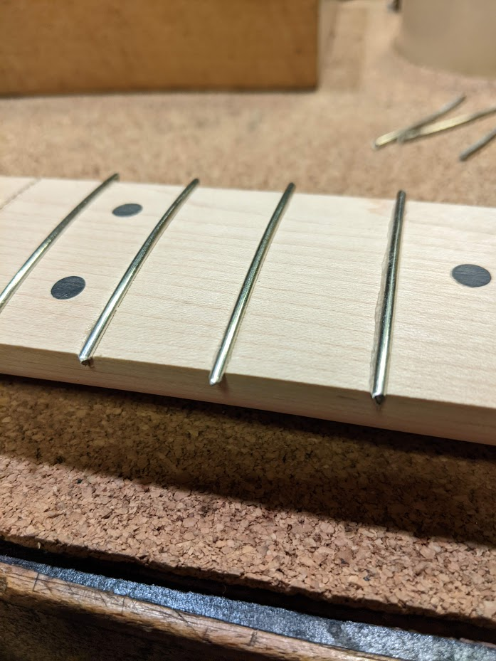
Levigatura e smussatura dei tasti
Completata la posa dei tasti, con una lima per metello si passa a livellare i tasti sbordanti rispetto alla larghezza del manico. La procedura è molto semplice: bisogna dapprima portare i tasti alla stessa quota del contorno laterale, per poi praticare uno smusso di circa 20°/30° verso l’interno della tastiera. Per lo smusso si può usare una dima, fatta da un blocchetto di legno con una lima dolce da metallo fissata già con l’angolo giusto. Attenzione a non segnare i tasti con la lima, se scappa può rigare parecchio, specialmente i tasti in nickel.
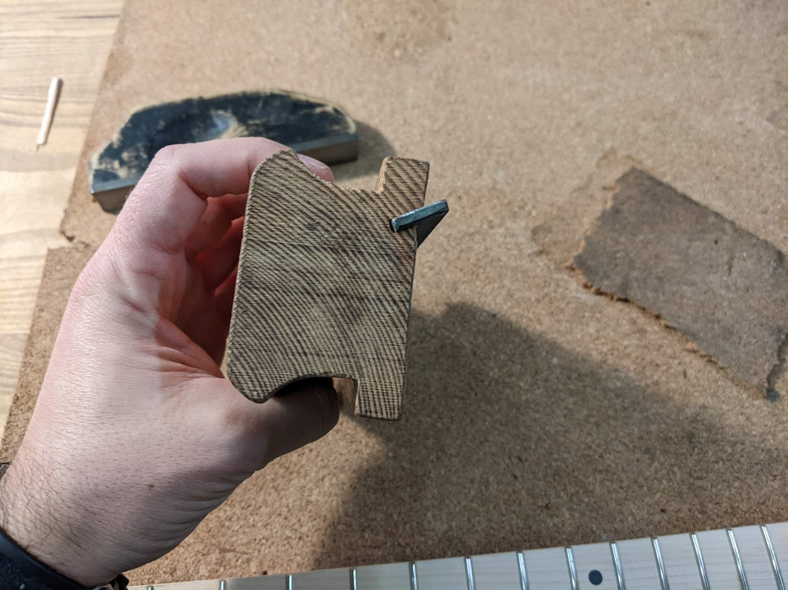
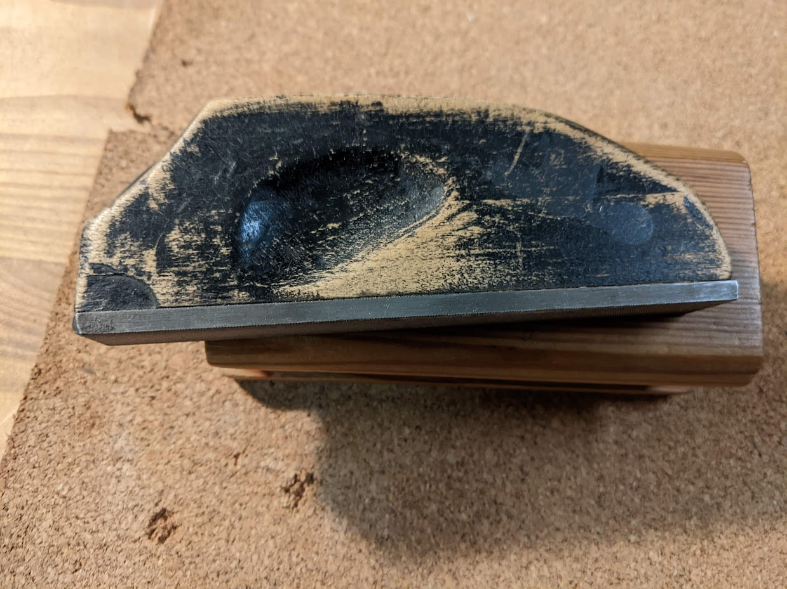
Un’altra lavorazione di questa fase è quella di smussare gli angoli nelle parti terminali dei tasti, anche nota come “fret dressing”. Per questa operazione serve una limetta apposita che ha una faccia stondata, “safe edge”, in modo da non fare danni al legno della tastiera nel caso in cui ci si voglia appoggiare. Il movimento deve essere continuo dall’alto verso il basso ed inoltre bisogna imprimere una rotazione diretta verso il centro del tasto, in grado di generare una vera e propria stondatura dei terminali dei tasti.
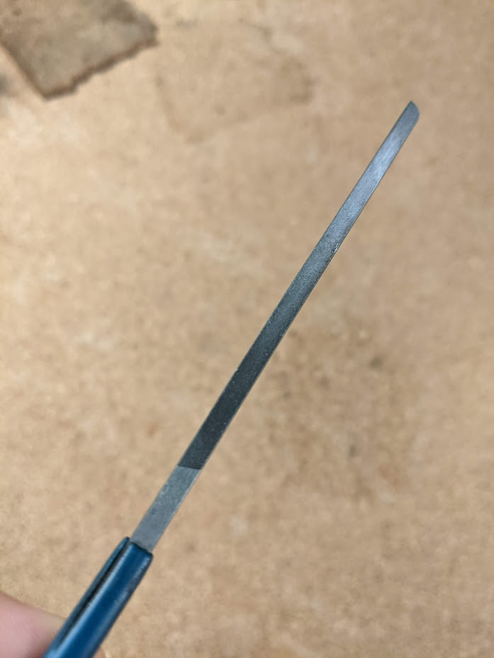
Ultima operazione è quella di chiudere i vuoti che possono crearsi tra il terminale del tasto e il canale, perché il canale è generalmente più profondo del tasto. Si procede con della carta a grana fine 320 facendo delle leggerissime passate che formino della polvere (di acero in questo caso). Con della colla cianoacrilica si mette 1 goccia per terminale e si fa in modo che polvere e colla si mescolino e riempiano il vuoto. Si applica poi un’ulteriore goccetta di colla per fissare l’impasto. Alla fine si leviga con carta 320 a mano e senza fare nessuna pressione fino ad avere il lato del manico nuovamente liscio.
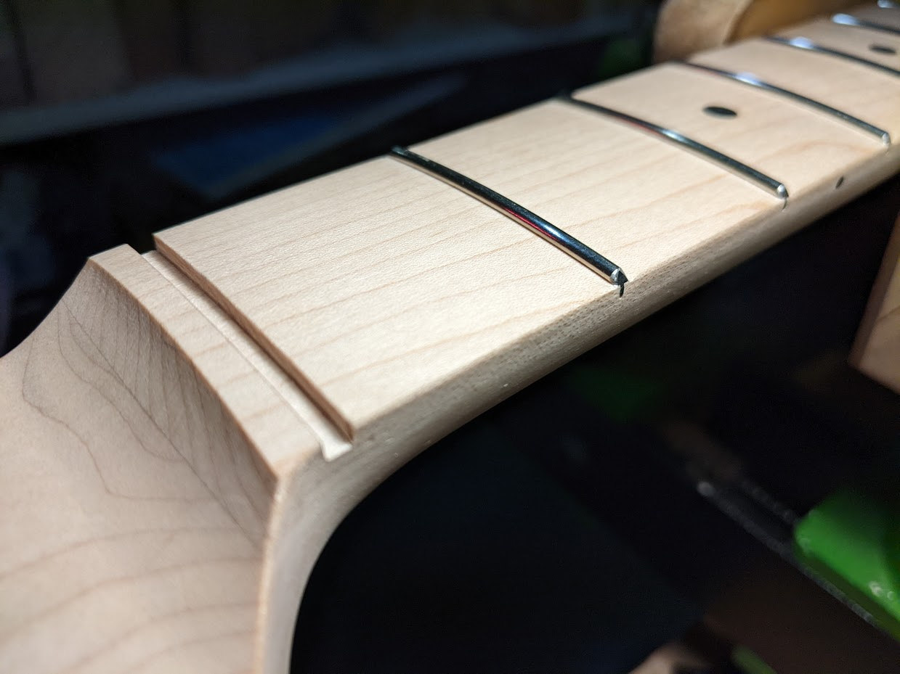
Capotasto
Con uno scalpello da 2 mm, si asporta la parte di legno che forma il capotasto. I due estremi sono rappresentati dai tagli fatti con la dima per i tagli dei tasti, che formano una sorta di area di sicurezza da non oltrepassare. Si procede ad asportare uno strato dopo l’altro. Un suggerimento utile a non strappare la fibra di legno è quello di lavorare con lo scalpello sempre da fuori verso dentro, fermarsi con la lama qualche millimetro prima dell’altro estremo, lavorare l’altro estremo da fuori verso dentro ricongiungendo e completando lo strato asportato.
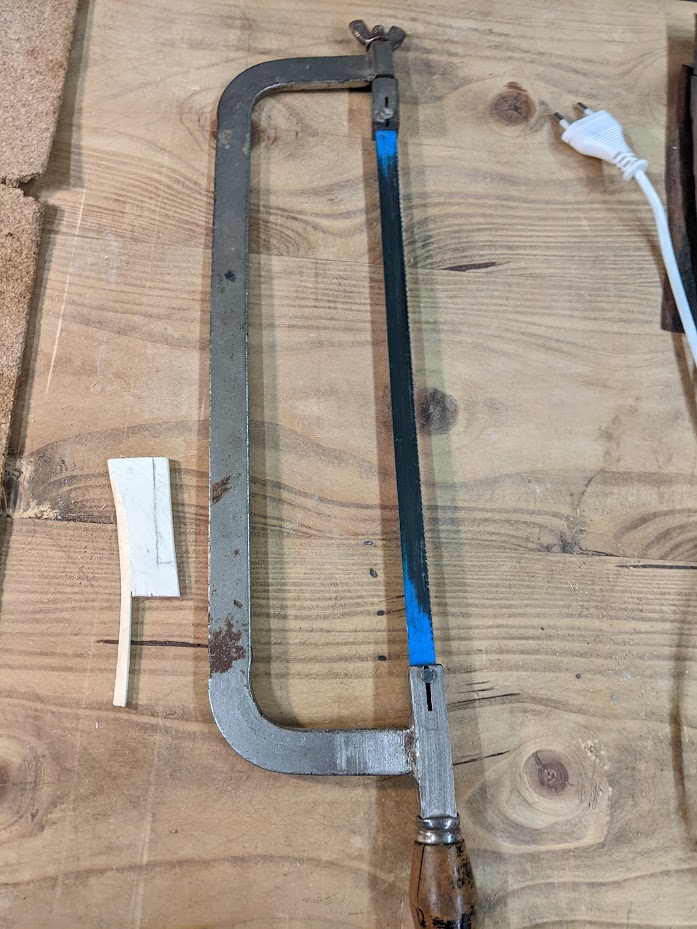
Il capotasto è ricavato da un pezzo di osso del femore di manzo. Si taglia prima un parallelepipedo grande all’incirca come il canale del capotasto (largo circa 3 mm) con una sega per metallo.
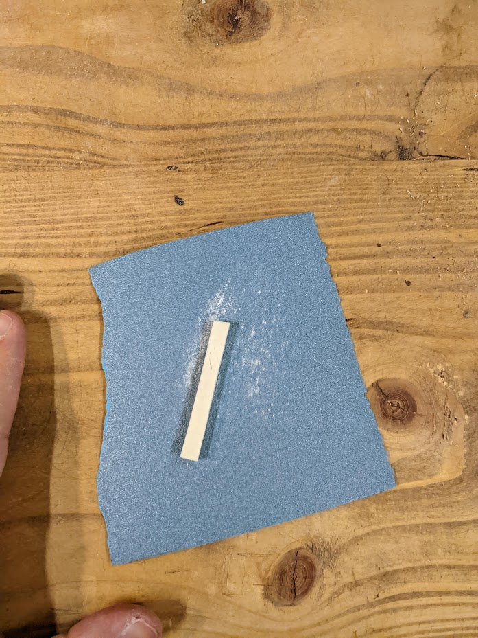
Si procede quindi a levigare due facce, con carta 120, in modo che il blocchetto sia perfettamente incastrato nel canale. Poi, si prendono le misure del raggio della tastiera tracciando con una matita direttamente sul pezzo di osso la curvatura della tastiera. Con una lima per metallo si procede a creare la curvatura della tastiera fino al punto in cui il capotasto entri perfettamente senza particolari pressioni. La curvatura deve essere replicata anche sul lato opposto, facendo attenzione a non asportare troppo materiale perché se è troppo basso rispetto ai tasti si avranno problemi con la messa a punto.
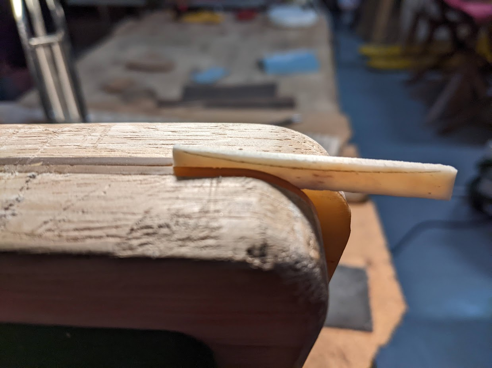
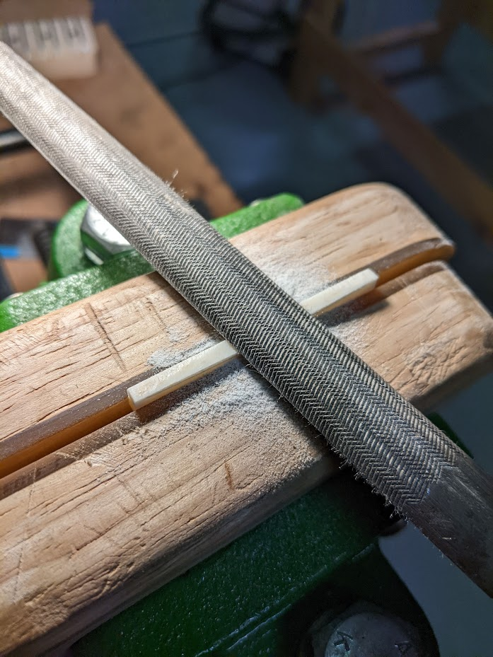
Quando l’incastro è perfetto si tracciano con una matita gli estremi da asportare andando in appoggio sulla superficie del manico in modo che i terminali del capotasto siano a filo con il manico. Si procede quindi all’asportazione del materiale con carta abrasiva. Come ultima operazione vengono stondati gli angoli superiori delle facce terminali, sempre con la carta. Usare per queste operazioni di “fitting” finale carta 220 o 320.
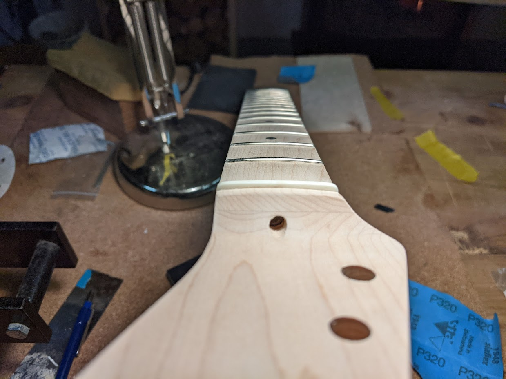
Una volta completato il capotasto è stato installato con qualche goccia di colla cianoacrilica. Se dovessero esserci dei piccoli vuoti, cioè se il “fitting” non è perfetto, si può, con molta attenzione e mascherando con il nastro le parti che non devono essere coperte, fare uno stucco al volo con della polvere di acero e della colla cianoacrilica e riempire i vuoti con lo stucco.
In tutte le zone in cui è fuoriuscita della colla, specialmente ai tasti, si può rimuovere usando uno scalpello da 2 o 3 mm.
Foro di accesso al truss rod
Con una punta da 10mm lunga si esegue il foro di accesso al truss rud. L’operazione è molto delicata e ci vuole un po’ di esperienza. Bisogna impostare un angolo di perforazione che garantisca la possibilità di inserire una chiave esagonale e che la rotazione del dado sia libera. È preferibile costruirsi una dima dedicata, anche se in questo caso il foro è stato praticato dal maestro senza nessun tipo di supporto.
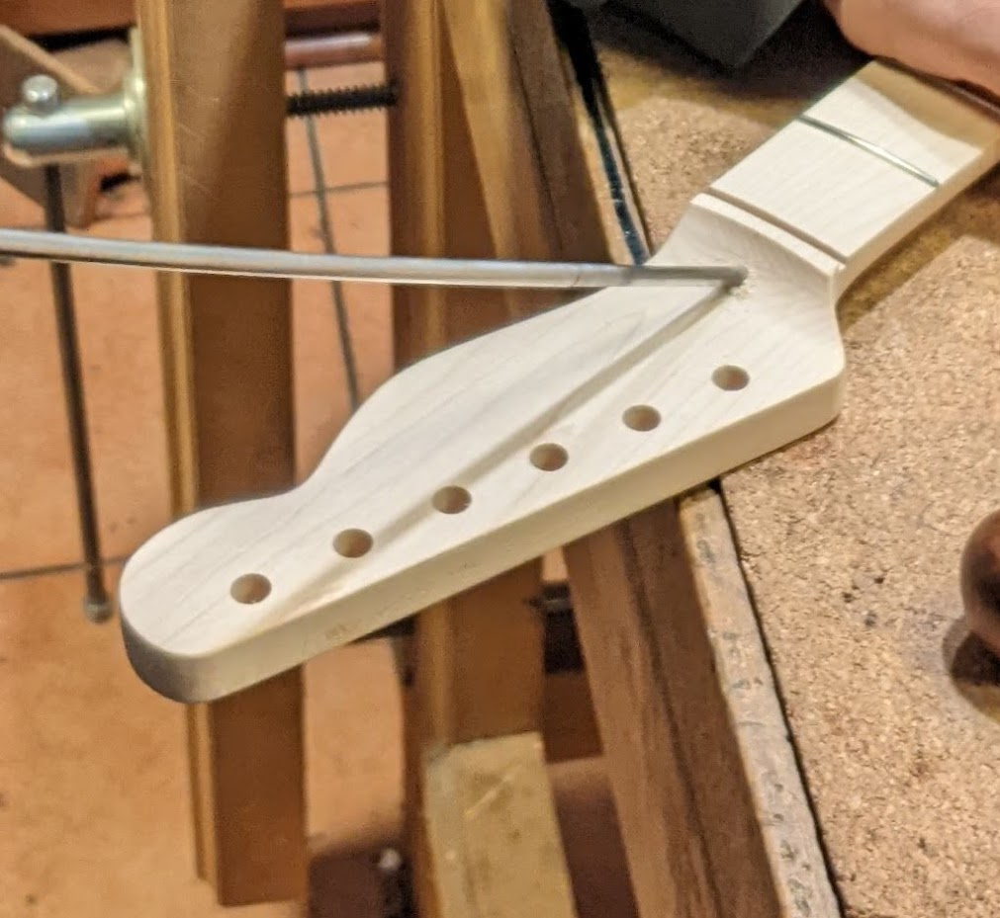
Con questa operazione si concludono le lavorazione sul manico! 🎉